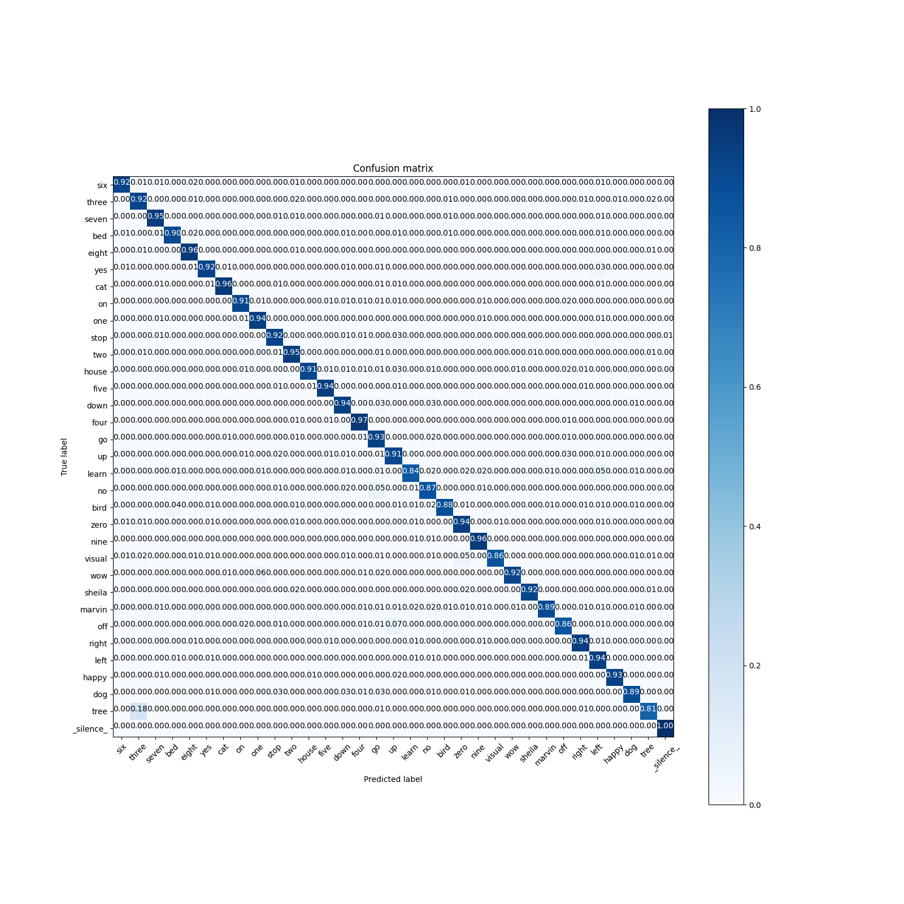

<!DOCTYPE html>
<!--[if IE 8]><html class="no-js lt-ie9" lang="en" > <![endif]-->
<!--[if gt IE 8]><!--> <html class="no-js" lang="en" > <!--<![endif]-->
<head>
  <meta charset="utf-8">
  
  <meta name="viewport" content="width=device-width, initial-scale=1.0">
  
  <title>DS-CNN/KWS inference &mdash; Akida Examples  documentation</title>
  

  
  
    <link rel="shortcut icon" href="../_static/favicon.ico"/>
  
  
  

  
  <script type="text/javascript" src="../_static/js/modernizr.min.js"></script>
  
    
      <script type="text/javascript" id="documentation_options" data-url_root="../" src="../_static/documentation_options.js"></script>
        <script src="../_static/jquery.js"></script>
        <script src="../_static/underscore.js"></script>
        <script src="../_static/doctools.js"></script>
        <script src="../_static/language_data.js"></script>
    
    <script type="text/javascript" src="../_static/js/theme.js"></script>

    

  
  <link rel="stylesheet" href="../_static/css/theme.css" type="text/css" />
  <link rel="stylesheet" href="../_static/pygments.css" type="text/css" />
  <link rel="stylesheet" href="../_static/gallery.css" type="text/css" />
  <link rel="stylesheet" href="../_static/gallery-binder.css" type="text/css" />
  <link rel="stylesheet" href="../_static/gallery-dataframe.css" type="text/css" />
    <link rel="index" title="Index" href="../genindex.html" />
    <link rel="search" title="Search" href="../search.html" />
    <link rel="next" title="DS-CNN CIFAR10 inference" href="plot_ds_cnn_cifar10.html" />
    <link rel="prev" title="CNN conversion flow tutorial" href="plot_cnn_flow.html" /> 
</head>

<body class="wy-body-for-nav">

   
  <div class="wy-grid-for-nav">
    
    <nav data-toggle="wy-nav-shift" class="wy-nav-side">
      <div class="wy-side-scroll">
        <div class="wy-side-nav-search"  style="background: #3f51b5" >
          

          
            <a href="../index.html">
          

          
            
            
          
          </a>

          
            
            
              <div class="version">
                Akida 1.8.8
              </div>
            
          

          
<div role="search">
  <form id="rtd-search-form" class="wy-form" action="../search.html" method="get">
    <input type="text" name="q" placeholder="Search docs" />
    <input type="hidden" name="check_keywords" value="yes" />
    <input type="hidden" name="area" value="default" />
  </form>
</div>

          
        </div>

        <div class="wy-menu wy-menu-vertical" data-spy="affix" role="navigation" aria-label="main navigation">
          
            
            
              
            
            
              <ul class="current">
<li class="toctree-l1"><a class="reference internal" href="../index.html">Overview</a></li>
<li class="toctree-l1"><a class="reference internal" href="../installation.html">Installation</a><ul>
<li class="toctree-l2"><a class="reference internal" href="../installation.html#requirements">Requirements</a></li>
<li class="toctree-l2"><a class="reference internal" href="../installation.html#quick-installation">Quick installation</a></li>
<li class="toctree-l2"><a class="reference internal" href="../installation.html#running-examples">Running examples</a></li>
</ul>
</li>
<li class="toctree-l1"><a class="reference internal" href="../user_guide/user_guide.html">User guide</a><ul>
<li class="toctree-l2"><a class="reference internal" href="../user_guide/getting_started.html">Getting started</a><ul>
<li class="toctree-l3"><a class="reference internal" href="../user_guide/getting_started.html#for-beginners">For beginners</a></li>
<li class="toctree-l3"><a class="reference internal" href="../user_guide/getting_started.html#for-users-familiar-with-deep-learning">For users familiar with deep-learning</a></li>
</ul>
</li>
<li class="toctree-l2"><a class="reference internal" href="../user_guide/aee.html">Akida user guide</a><ul>
<li class="toctree-l3"><a class="reference internal" href="../user_guide/aee.html#the-akida-execution-engine">The Akida Execution Engine</a><ul>
<li class="toctree-l4"><a class="reference internal" href="../user_guide/aee.html#id1">1. The Spiking Neural Network model</a></li>
<li class="toctree-l4"><a class="reference internal" href="../user_guide/aee.html#id2">2. Input data format</a></li>
<li class="toctree-l4"><a class="reference internal" href="../user_guide/aee.html#id3">3. Determine training mode</a></li>
<li class="toctree-l4"><a class="reference internal" href="../user_guide/aee.html#id4">4. Interpreting outputs</a></li>
</ul>
</li>
<li class="toctree-l3"><a class="reference internal" href="../user_guide/aee.html#neural-network-model">Neural Network model</a><ul>
<li class="toctree-l4"><a class="reference internal" href="../user_guide/aee.html#specifying-the-neural-network-model">Specifying the Neural Network model</a></li>
<li class="toctree-l4"><a class="reference internal" href="../user_guide/aee.html#saving-and-loading">Saving and loading</a></li>
<li class="toctree-l4"><a class="reference internal" href="../user_guide/aee.html#input-layer-types">Input layer types</a></li>
<li class="toctree-l4"><a class="reference internal" href="../user_guide/aee.html#data-processing-layer-types">Data-Processing layer types</a></li>
</ul>
</li>
<li class="toctree-l3"><a class="reference internal" href="../user_guide/aee.html#id5">Using Akida Unsupervised Learning</a><ul>
<li class="toctree-l4"><a class="reference internal" href="../user_guide/aee.html#learning-constraints">Learning constraints</a></li>
<li class="toctree-l4"><a class="reference internal" href="../user_guide/aee.html#compiling-a-layer">Compiling a layer</a></li>
<li class="toctree-l4"><a class="reference internal" href="../user_guide/aee.html#id6">Learning parameters</a></li>
</ul>
</li>
</ul>
</li>
<li class="toctree-l2"><a class="reference internal" href="../user_guide/cnn2snn.html">CNN2SNN toolkit</a><ul>
<li class="toctree-l3"><a class="reference internal" href="../user_guide/cnn2snn.html#overview">Overview</a><ul>
<li class="toctree-l4"><a class="reference internal" href="../user_guide/cnn2snn.html#conversion-workflow">Conversion workflow</a></li>
<li class="toctree-l4"><a class="reference internal" href="../user_guide/cnn2snn.html#typical-training-scenario">Typical training scenario</a></li>
<li class="toctree-l4"><a class="reference internal" href="../user_guide/cnn2snn.html#design-compatibility-constraints">Design compatibility constraints</a></li>
<li class="toctree-l4"><a class="reference internal" href="../user_guide/cnn2snn.html#quantization-compatibility-constraints">Quantization compatibility constraints</a></li>
<li class="toctree-l4"><a class="reference internal" href="../user_guide/cnn2snn.html#command-line-interface">Command-line interface</a></li>
</ul>
</li>
<li class="toctree-l3"><a class="reference internal" href="../user_guide/cnn2snn.html#layers-considerations">Layers Considerations</a><ul>
<li class="toctree-l4"><a class="reference internal" href="../user_guide/cnn2snn.html#supported-layer-types">Supported layer types</a></li>
<li class="toctree-l4"><a class="reference internal" href="../user_guide/cnn2snn.html#cnn2snn-quantization-aware-layers">CNN2SNN Quantization-aware layers</a></li>
<li class="toctree-l4"><a class="reference internal" href="../user_guide/cnn2snn.html#training-only-layers">Training-Only Layers</a></li>
<li class="toctree-l4"><a class="reference internal" href="../user_guide/cnn2snn.html#first-layers">First Layers</a></li>
<li class="toctree-l4"><a class="reference internal" href="../user_guide/cnn2snn.html#id6">Final Layers</a></li>
</ul>
</li>
<li class="toctree-l3"><a class="reference internal" href="../user_guide/cnn2snn.html#tips-and-tricks">Tips and Tricks</a></li>
</ul>
</li>
<li class="toctree-l2"><a class="reference internal" href="../user_guide/akida_models.html">Akida models zoo</a><ul>
<li class="toctree-l3"><a class="reference internal" href="../user_guide/akida_models.html#overview">Overview</a></li>
<li class="toctree-l3"><a class="reference internal" href="../user_guide/akida_models.html#command-line-interface-for-model-creation">Command-line interface for model creation</a></li>
<li class="toctree-l3"><a class="reference internal" href="../user_guide/akida_models.html#command-line-interface-for-model-training">Command-line interface for model training</a><ul>
<li class="toctree-l4"><a class="reference internal" href="../user_guide/akida_models.html#cifar10-training-and-tuning">CIFAR10 training and tuning</a></li>
<li class="toctree-l4"><a class="reference internal" href="../user_guide/akida_models.html#utk-face-training">UTK Face training</a></li>
<li class="toctree-l4"><a class="reference internal" href="../user_guide/akida_models.html#kws-training">KWS training</a></li>
</ul>
</li>
<li class="toctree-l3"><a class="reference internal" href="../user_guide/akida_models.html#id1">Layer Blocks</a><ul>
<li class="toctree-l4"><a class="reference internal" href="../user_guide/akida_models.html#conv-block"><code class="docutils literal notranslate"><span class="pre">conv_block</span></code></a></li>
<li class="toctree-l4"><a class="reference internal" href="../user_guide/akida_models.html#dense-block"><code class="docutils literal notranslate"><span class="pre">dense_block</span></code></a></li>
<li class="toctree-l4"><a class="reference internal" href="../user_guide/akida_models.html#separable-conv-block"><code class="docutils literal notranslate"><span class="pre">separable_conv_block</span></code></a></li>
</ul>
</li>
</ul>
</li>
<li class="toctree-l2"><a class="reference internal" href="../user_guide/hw_constraints.html">Hardware constraints</a><ul>
<li class="toctree-l3"><a class="reference internal" href="../user_guide/hw_constraints.html#input-layer">Input layer</a></li>
<li class="toctree-l3"><a class="reference internal" href="../user_guide/hw_constraints.html#data-processing-layers">Data-Processing layers</a><ul>
<li class="toctree-l4"><a class="reference internal" href="../user_guide/hw_constraints.html#convolutional-layer">Convolutional layer</a></li>
<li class="toctree-l4"><a class="reference internal" href="../user_guide/hw_constraints.html#fully-connected-layer">Fully connected layer</a></li>
</ul>
</li>
</ul>
</li>
</ul>
</li>
<li class="toctree-l1"><a class="reference internal" href="../api_reference/api_reference.html">API reference</a><ul>
<li class="toctree-l2"><a class="reference internal" href="../api_reference/aee_apis.html">Akida Execution Engine</a><ul>
<li class="toctree-l3"><a class="reference internal" href="../api_reference/aee_apis.html#model">Model</a></li>
<li class="toctree-l3"><a class="reference internal" href="../api_reference/aee_apis.html#layer">Layer</a></li>
<li class="toctree-l3"><a class="reference internal" href="../api_reference/aee_apis.html#layerstatistics">LayerStatistics</a></li>
<li class="toctree-l3"><a class="reference internal" href="../api_reference/aee_apis.html#observer">Observer</a></li>
<li class="toctree-l3"><a class="reference internal" href="../api_reference/aee_apis.html#inputdata">InputData</a></li>
<li class="toctree-l3"><a class="reference internal" href="../api_reference/aee_apis.html#inputconvolutional">InputConvolutional</a></li>
<li class="toctree-l3"><a class="reference internal" href="../api_reference/aee_apis.html#fullyconnected">FullyConnected</a></li>
<li class="toctree-l3"><a class="reference internal" href="../api_reference/aee_apis.html#convolutional">Convolutional</a></li>
<li class="toctree-l3"><a class="reference internal" href="../api_reference/aee_apis.html#separableconvolutional">SeparableConvolutional</a></li>
<li class="toctree-l3"><a class="reference internal" href="../api_reference/aee_apis.html#dense">Dense</a></li>
<li class="toctree-l3"><a class="reference internal" href="../api_reference/aee_apis.html#sparse">Sparse</a></li>
<li class="toctree-l3"><a class="reference internal" href="../api_reference/aee_apis.html#coords-to-sparse">coords_to_sparse</a></li>
<li class="toctree-l3"><a class="reference internal" href="../api_reference/aee_apis.html#dense-to-sparse">dense_to_sparse</a></li>
<li class="toctree-l3"><a class="reference internal" href="../api_reference/aee_apis.html#packetize">packetize</a></li>
<li class="toctree-l3"><a class="reference internal" href="../api_reference/aee_apis.html#backend">Backend</a></li>
<li class="toctree-l3"><a class="reference internal" href="../api_reference/aee_apis.html#convolutionmode">ConvolutionMode</a></li>
<li class="toctree-l3"><a class="reference internal" href="../api_reference/aee_apis.html#poolingtype">PoolingType</a></li>
<li class="toctree-l3"><a class="reference internal" href="../api_reference/aee_apis.html#learningtype">LearningType</a></li>
<li class="toctree-l3"><a class="reference internal" href="../api_reference/aee_apis.html#compatibility">Compatibility</a></li>
</ul>
</li>
<li class="toctree-l2"><a class="reference internal" href="../api_reference/cnn2snn_apis.html">CNN2SNN</a><ul>
<li class="toctree-l3"><a class="reference internal" href="../api_reference/cnn2snn_apis.html#quantize">quantize</a></li>
<li class="toctree-l3"><a class="reference internal" href="../api_reference/cnn2snn_apis.html#convert">convert</a></li>
<li class="toctree-l3"><a class="reference internal" href="../api_reference/cnn2snn_apis.html#check-model-compatibility">check_model_compatibility</a></li>
<li class="toctree-l3"><a class="reference internal" href="../api_reference/cnn2snn_apis.html#weightquantizer">WeightQuantizer</a></li>
<li class="toctree-l3"><a class="reference internal" href="../api_reference/cnn2snn_apis.html#trainableweightquantizer">TrainableWeightQuantizer</a></li>
<li class="toctree-l3"><a class="reference internal" href="../api_reference/cnn2snn_apis.html#maxquantizer">MaxQuantizer</a></li>
<li class="toctree-l3"><a class="reference internal" href="../api_reference/cnn2snn_apis.html#maxperaxisquantizer">MaxPerAxisQuantizer</a></li>
<li class="toctree-l3"><a class="reference internal" href="../api_reference/cnn2snn_apis.html#weightfloat">WeightFloat</a></li>
<li class="toctree-l3"><a class="reference internal" href="../api_reference/cnn2snn_apis.html#quantizedconv2d">QuantizedConv2D</a></li>
<li class="toctree-l3"><a class="reference internal" href="../api_reference/cnn2snn_apis.html#quantizeddepthwiseconv2d">QuantizedDepthwiseConv2D</a></li>
<li class="toctree-l3"><a class="reference internal" href="../api_reference/cnn2snn_apis.html#quantizeddense">QuantizedDense</a></li>
<li class="toctree-l3"><a class="reference internal" href="../api_reference/cnn2snn_apis.html#quantizedseparableconv2d">QuantizedSeparableConv2D</a></li>
<li class="toctree-l3"><a class="reference internal" href="../api_reference/cnn2snn_apis.html#activationdiscreterelu">ActivationDiscreteRelu</a></li>
<li class="toctree-l3"><a class="reference internal" href="../api_reference/cnn2snn_apis.html#quantizedrelu">QuantizedReLU</a></li>
</ul>
</li>
<li class="toctree-l2"><a class="reference internal" href="../api_reference/akida_models_apis.html">Akida models</a><ul>
<li class="toctree-l3"><a class="reference internal" href="../api_reference/akida_models_apis.html#quantization-blocks">Quantization blocks</a><ul>
<li class="toctree-l4"><a class="reference internal" href="../api_reference/akida_models_apis.html#conv-block">conv_block</a></li>
<li class="toctree-l4"><a class="reference internal" href="../api_reference/akida_models_apis.html#separable-conv-block">separable_conv_block</a></li>
<li class="toctree-l4"><a class="reference internal" href="../api_reference/akida_models_apis.html#dense-block">dense_block</a></li>
</ul>
</li>
<li class="toctree-l3"><a class="reference internal" href="../api_reference/akida_models_apis.html#layer-blocks">Layer blocks</a><ul>
<li class="toctree-l4"><a class="reference internal" href="../api_reference/akida_models_apis.html#id1">conv_block</a></li>
<li class="toctree-l4"><a class="reference internal" href="../api_reference/akida_models_apis.html#id2">separable_conv_block</a></li>
<li class="toctree-l4"><a class="reference internal" href="../api_reference/akida_models_apis.html#id3">dense_block</a></li>
</ul>
</li>
<li class="toctree-l3"><a class="reference internal" href="../api_reference/akida_models_apis.html#model-zoo">Model zoo</a><ul>
<li class="toctree-l4"><a class="reference internal" href="../api_reference/akida_models_apis.html#mobilenet">Mobilenet</a></li>
<li class="toctree-l4"><a class="reference internal" href="../api_reference/akida_models_apis.html#ds-cnn">DS-CNN</a></li>
<li class="toctree-l4"><a class="reference internal" href="../api_reference/akida_models_apis.html#vgg">VGG</a></li>
<li class="toctree-l4"><a class="reference internal" href="../api_reference/akida_models_apis.html#yolo">YOLO</a></li>
</ul>
</li>
</ul>
</li>
</ul>
</li>
<li class="toctree-l1 current"><a class="reference internal" href="index.html">Examples</a><ul class="current">
<li class="toctree-l2"><a class="reference internal" href="plot_gxnor_mnist.html">GXNOR/MNIST inference</a><ul>
<li class="toctree-l3"><a class="reference internal" href="plot_gxnor_mnist.html#loading-the-mnist-dataset">1. Loading the MNIST dataset</a></li>
<li class="toctree-l3"><a class="reference internal" href="plot_gxnor_mnist.html#look-at-some-images-from-the-test-dataset">2. Look at some images from the test dataset</a></li>
<li class="toctree-l3"><a class="reference internal" href="plot_gxnor_mnist.html#load-the-pre-trained-akida-model">3. Load the pre-trained Akida model</a></li>
<li class="toctree-l3"><a class="reference internal" href="plot_gxnor_mnist.html#classify-a-single-image">4. Classify a single image</a></li>
<li class="toctree-l3"><a class="reference internal" href="plot_gxnor_mnist.html#check-performance-across-a-number-of-samples">5. Check performance across a number of samples</a></li>
</ul>
</li>
<li class="toctree-l2"><a class="reference internal" href="plot_regression.html">Regression tutorial</a><ul>
<li class="toctree-l3"><a class="reference internal" href="plot_regression.html#load-the-dataset">1. Load the dataset</a></li>
<li class="toctree-l3"><a class="reference internal" href="plot_regression.html#load-a-pre-trained-native-keras-model">2. Load a pre-trained native Keras model</a></li>
<li class="toctree-l3"><a class="reference internal" href="plot_regression.html#load-a-pre-trained-quantized-keras-model-satisfying-akida-nsoc-requirements">3. Load a pre-trained quantized Keras model satisfying Akida NSoC requirements</a></li>
<li class="toctree-l3"><a class="reference internal" href="plot_regression.html#conversion-to-akida">4. Conversion to Akida</a></li>
<li class="toctree-l3"><a class="reference internal" href="plot_regression.html#estimate-age-on-a-single-image">5. Estimate age on a single image</a></li>
</ul>
</li>
<li class="toctree-l2"><a class="reference internal" href="plot_cnn_flow.html">CNN conversion flow tutorial</a><ul>
<li class="toctree-l3"><a class="reference internal" href="plot_cnn_flow.html#load-and-reshape-mnist-dataset">1. Load and reshape MNIST dataset</a></li>
<li class="toctree-l3"><a class="reference internal" href="plot_cnn_flow.html#model-definition">2. Model definition</a><ul>
<li class="toctree-l4"><a class="reference internal" href="plot_cnn_flow.html#model-training">3. Model training</a></li>
</ul>
</li>
<li class="toctree-l3"><a class="reference internal" href="plot_cnn_flow.html#model-quantization">4. Model quantization</a></li>
<li class="toctree-l3"><a class="reference internal" href="plot_cnn_flow.html#model-fine-tuning-quantization-aware-training">5. Model fine tuning (quantization-aware training)</a></li>
<li class="toctree-l3"><a class="reference internal" href="plot_cnn_flow.html#model-conversion">6. Model conversion</a></li>
</ul>
</li>
<li class="toctree-l2 current"><a class="current reference internal" href="#">DS-CNN/KWS inference</a><ul>
<li class="toctree-l3"><a class="reference internal" href="#load-the-preprocessed-dataset">1. Load the preprocessed dataset</a></li>
<li class="toctree-l3"><a class="reference internal" href="#load-a-pre-trained-native-keras-model">2. Load a pre-trained native Keras model</a></li>
<li class="toctree-l3"><a class="reference internal" href="#load-a-pre-trained-quantized-keras-model-satisfying-akida-nsoc-requirements">3. Load a pre-trained quantized Keras model satisfying Akida NSoC requirements</a></li>
<li class="toctree-l3"><a class="reference internal" href="#conversion-to-akida">4. Conversion to Akida</a><ul>
<li class="toctree-l4"><a class="reference internal" href="#confusion-matrix">5. Confusion matrix</a></li>
</ul>
</li>
</ul>
</li>
<li class="toctree-l2"><a class="reference internal" href="plot_ds_cnn_cifar10.html">DS-CNN CIFAR10 inference</a><ul>
<li class="toctree-l3"><a class="reference internal" href="plot_ds_cnn_cifar10.html#dataset-preparation">1. Dataset preparation</a></li>
<li class="toctree-l3"><a class="reference internal" href="plot_ds_cnn_cifar10.html#create-a-keras-ds-cnn-model">2. Create a Keras DS-CNN model</a></li>
<li class="toctree-l3"><a class="reference internal" href="plot_ds_cnn_cifar10.html#quantized-model">3. Quantized model</a></li>
<li class="toctree-l3"><a class="reference internal" href="plot_ds_cnn_cifar10.html#pretrained-quantized-model">4. Pretrained quantized model</a></li>
<li class="toctree-l3"><a class="reference internal" href="plot_ds_cnn_cifar10.html#conversion-to-akida">5. Conversion to Akida</a><ul>
<li class="toctree-l4"><a class="reference internal" href="plot_ds_cnn_cifar10.html#convert-to-akida-model">5.1 Convert to Akida model</a></li>
<li class="toctree-l4"><a class="reference internal" href="plot_ds_cnn_cifar10.html#check-hardware-compliancy">5.2 Check hardware compliancy</a></li>
<li class="toctree-l4"><a class="reference internal" href="plot_ds_cnn_cifar10.html#check-performance">5.3 Check performance</a></li>
<li class="toctree-l4"><a class="reference internal" href="plot_ds_cnn_cifar10.html#show-predictions-for-a-random-image">5.4 Show predictions for a random image</a></li>
</ul>
</li>
</ul>
</li>
<li class="toctree-l2"><a class="reference internal" href="plot_voc_yolo_detection.html">YOLO/PASCAL-VOC detection tutorial</a><ul>
<li class="toctree-l3"><a class="reference internal" href="plot_voc_yolo_detection.html#introduction">1. Introduction</a><ul>
<li class="toctree-l4"><a class="reference internal" href="plot_voc_yolo_detection.html#object-detection">1.1 Object detection</a></li>
<li class="toctree-l4"><a class="reference internal" href="plot_voc_yolo_detection.html#yolo-key-concepts">1.2 YOLO key concepts</a></li>
</ul>
</li>
<li class="toctree-l3"><a class="reference internal" href="plot_voc_yolo_detection.html#preprocessing-tools">2. Preprocessing tools</a></li>
<li class="toctree-l3"><a class="reference internal" href="plot_voc_yolo_detection.html#model-architecture">3. Model architecture</a></li>
<li class="toctree-l3"><a class="reference internal" href="plot_voc_yolo_detection.html#training">4. Training</a></li>
<li class="toctree-l3"><a class="reference internal" href="plot_voc_yolo_detection.html#performance">5. Performance</a></li>
<li class="toctree-l3"><a class="reference internal" href="plot_voc_yolo_detection.html#conversion-to-akida">6. Conversion to Akida</a><ul>
<li class="toctree-l4"><a class="reference internal" href="plot_voc_yolo_detection.html#convert-to-akida-model">6.1 Convert to Akida model</a></li>
<li class="toctree-l4"><a class="reference internal" href="plot_voc_yolo_detection.html#check-performance">6.1 Check performance</a></li>
<li class="toctree-l4"><a class="reference internal" href="plot_voc_yolo_detection.html#show-predictions-for-a-random-image">6.2 Show predictions for a random image</a></li>
</ul>
</li>
</ul>
</li>
<li class="toctree-l2"><a class="reference internal" href="plot_transfer_learning.html">Transfer learning with MobileNet for cats vs. dogs</a><ul>
<li class="toctree-l3"><a class="reference internal" href="plot_transfer_learning.html#transfer-learning-process">1. Transfer learning process</a></li>
<li class="toctree-l3"><a class="reference internal" href="plot_transfer_learning.html#load-and-preprocess-data">2. Load and preprocess data</a><ul>
<li class="toctree-l4"><a class="reference internal" href="plot_transfer_learning.html#a-load-and-split-data">2.A - Load and split data</a></li>
<li class="toctree-l4"><a class="reference internal" href="plot_transfer_learning.html#b-preprocess-the-test-set">2.B - Preprocess the test set</a></li>
<li class="toctree-l4"><a class="reference internal" href="plot_transfer_learning.html#c-get-labels">2.C - Get labels</a></li>
</ul>
</li>
<li class="toctree-l3"><a class="reference internal" href="plot_transfer_learning.html#convert-a-quantized-keras-model-to-akida">3. Convert a quantized Keras model to Akida</a><ul>
<li class="toctree-l4"><a class="reference internal" href="plot_transfer_learning.html#a-instantiate-a-keras-base-model">3.A - Instantiate a Keras base model</a></li>
<li class="toctree-l4"><a class="reference internal" href="plot_transfer_learning.html#b-modify-the-network-and-load-pre-trained-weights">3.B - Modify the network and load pre-trained weights</a></li>
<li class="toctree-l4"><a class="reference internal" href="plot_transfer_learning.html#c-convert-to-akida">3.C - Convert to Akida</a></li>
</ul>
</li>
<li class="toctree-l3"><a class="reference internal" href="plot_transfer_learning.html#classify-test-images">4. Classify test images</a><ul>
<li class="toctree-l4"><a class="reference internal" href="plot_transfer_learning.html#a-classify-test-images">4.A Classify test images</a></li>
<li class="toctree-l4"><a class="reference internal" href="plot_transfer_learning.html#b-compare-results">4.B Compare results</a></li>
</ul>
</li>
</ul>
</li>
<li class="toctree-l2"><a class="reference internal" href="plot_mobilenet_imagenet.html">MobileNet/ImageNet inference</a><ul>
<li class="toctree-l3"><a class="reference internal" href="plot_mobilenet_imagenet.html#load-cnn2snn-tool-dependencies">1. Load CNN2SNN tool dependencies</a></li>
<li class="toctree-l3"><a class="reference internal" href="plot_mobilenet_imagenet.html#load-test-images-from-imagenet">2. Load test images from ImageNet</a><ul>
<li class="toctree-l4"><a class="reference internal" href="plot_mobilenet_imagenet.html#load-test-images-and-preprocess-test-images">2.1 Load test images and preprocess test images</a></li>
<li class="toctree-l4"><a class="reference internal" href="plot_mobilenet_imagenet.html#load-labels">2.2 Load labels</a></li>
</ul>
</li>
<li class="toctree-l3"><a class="reference internal" href="plot_mobilenet_imagenet.html#create-a-quantized-keras-model">3. Create a quantized Keras model</a><ul>
<li class="toctree-l4"><a class="reference internal" href="plot_mobilenet_imagenet.html#instantiate-keras-model">3.1 Instantiate Keras model</a></li>
<li class="toctree-l4"><a class="reference internal" href="plot_mobilenet_imagenet.html#check-performance-of-the-keras-model">3.2 Check performance of the Keras model</a></li>
</ul>
</li>
<li class="toctree-l3"><a class="reference internal" href="plot_mobilenet_imagenet.html#convert-keras-model-for-akida-nsoc">4. Convert Keras model for Akida NSoC</a><ul>
<li class="toctree-l4"><a class="reference internal" href="plot_mobilenet_imagenet.html#convert-keras-model-to-an-akida-compatible-model">4.1 Convert Keras model to an Akida compatible model</a></li>
<li class="toctree-l4"><a class="reference internal" href="plot_mobilenet_imagenet.html#test-performance-of-the-akida-model">4.2 Test performance of the Akida model</a></li>
<li class="toctree-l4"><a class="reference internal" href="plot_mobilenet_imagenet.html#show-predictions-for-a-random-test-image">4.3 Show predictions for a random test image</a></li>
</ul>
</li>
</ul>
</li>
</ul>
</li>
<li class="toctree-l1"><a class="reference external" href="https://github.com/Brainchip-Inc/akida_examples/releases">Changelog</a></li>
<li class="toctree-l1"><a class="reference external" href="https://support.brainchip.com/portal/home">Support</a></li>
<li class="toctree-l1"><a class="reference internal" href="../license.html">License</a></li>
</ul>

            
          
        </div>
      </div>
    </nav>

    <section data-toggle="wy-nav-shift" class="wy-nav-content-wrap">

      
      <nav class="wy-nav-top" aria-label="top navigation">
        
          <i data-toggle="wy-nav-top" class="fa fa-bars"></i>
          <a href="../index.html">Akida Examples</a>
        
      </nav>


      <div class="wy-nav-content">
        
        <div class="rst-content">
        
          


<div role="navigation" aria-label="breadcrumbs navigation">

  <ul class="wy-breadcrumbs">
    
      <li><a href="../index.html">Docs</a> &raquo;</li>
        
          <li><a href="index.html">Akida examples</a> &raquo;</li>
        
      <li>DS-CNN/KWS inference</li>
    
    
      <li class="wy-breadcrumbs-aside">
        
            
        
      </li>
    
  </ul>

  
  <hr/>
</div>
          <div role="main" class="document" itemscope="itemscope" itemtype="http://schema.org/Article">
           <div itemprop="articleBody">
            
  <div class="sphx-glr-download-link-note admonition note">
<p class="admonition-title">Note</p>
<p>Click <a class="reference internal" href="#sphx-glr-download-examples-plot-ds-cnn-kws-py"><span class="std std-ref">here</span></a>     to download the full example code</p>
</div>
<div class="sphx-glr-example-title section" id="ds-cnn-kws-inference">
<span id="sphx-glr-examples-plot-ds-cnn-kws-py"></span><h1>DS-CNN/KWS inference<a class="headerlink" href="#ds-cnn-kws-inference" title="Permalink to this headline">¶</a></h1>
<p>This tutorial illustrates how to build a basic speech recognition
Akida network that recognizes thirty-two different words.</p>
<p>The model will be first defined as a CNN and trained in Keras, then
converted using the <a class="reference external" href="../user_guide/cnn2snn.html">CNN2SNN toolkit</a>.</p>
<p>This example uses a Keyword Spotting Dataset prepared using
<strong>TensorFlow</strong> <a class="reference external" href="https://www.tensorflow.org/tutorials/sequences/audio_recognition">audio recognition
example</a>
utils.</p>
<p>The words to recognize are first converted to <a class="reference external" href="https://github.com/tensorflow/docs/blob/master/site/en/r1/tutorials/sequences/audio_recognition.md#how-does-this-model-work">spectrogram
images</a>
that allows us to use a model architecture that is typically used for
image recognition tasks.</p>
<div class="section" id="load-the-preprocessed-dataset">
<h2>1. Load the preprocessed dataset<a class="headerlink" href="#load-the-preprocessed-dataset" title="Permalink to this headline">¶</a></h2>
<div class="highlight-default notranslate"><div class="highlight"><pre><span></span><span class="kn">import</span> <span class="nn">pickle</span>

<span class="kn">from</span> <span class="nn">tensorflow.keras.utils</span> <span class="kn">import</span> <span class="n">get_file</span>

<span class="c1"># Fetch pre-processed data for 32 keywords</span>
<span class="n">fname</span> <span class="o">=</span> <span class="n">get_file</span><span class="p">(</span>
    <span class="n">fname</span><span class="o">=</span><span class="s1">&#39;kws_preprocessed_all_words_except_backward_follow_forward.pkl&#39;</span><span class="p">,</span>
    <span class="n">origin</span><span class="o">=</span>
    <span class="s2">&quot;http://data.brainchip.com/dataset-mirror/kws/kws_preprocessed_all_words_except_backward_follow_forward.pkl&quot;</span><span class="p">,</span>
    <span class="n">cache_subdir</span><span class="o">=</span><span class="s1">&#39;datasets/kws&#39;</span><span class="p">)</span>
<span class="k">with</span> <span class="nb">open</span><span class="p">(</span><span class="n">fname</span><span class="p">,</span> <span class="s1">&#39;rb&#39;</span><span class="p">)</span> <span class="k">as</span> <span class="n">f</span><span class="p">:</span>
    <span class="p">[</span><span class="n">_</span><span class="p">,</span> <span class="n">_</span><span class="p">,</span> <span class="n">x_valid_akida</span><span class="p">,</span> <span class="n">y_valid</span><span class="p">,</span> <span class="n">_</span><span class="p">,</span> <span class="n">_</span><span class="p">,</span> <span class="n">word_to_index</span><span class="p">,</span> <span class="n">_</span><span class="p">]</span> <span class="o">=</span> <span class="n">pickle</span><span class="o">.</span><span class="n">load</span><span class="p">(</span><span class="n">f</span><span class="p">)</span>

<span class="c1"># Preprocessed dataset parameters</span>
<span class="n">num_classes</span> <span class="o">=</span> <span class="nb">len</span><span class="p">(</span><span class="n">word_to_index</span><span class="p">)</span>

<span class="nb">print</span><span class="p">(</span><span class="s2">&quot;Wanted words and labels:</span><span class="se">\n</span><span class="s2">&quot;</span><span class="p">,</span> <span class="n">word_to_index</span><span class="p">)</span>

<span class="c1"># For cnn2snn Keras training, data must be scaled (usually to [0,1])</span>
<span class="n">a</span> <span class="o">=</span> <span class="mi">255</span>
<span class="n">b</span> <span class="o">=</span> <span class="mi">0</span>

<span class="n">x_valid_keras</span> <span class="o">=</span> <span class="p">(</span><span class="n">x_valid_akida</span><span class="o">.</span><span class="n">astype</span><span class="p">(</span><span class="s1">&#39;float32&#39;</span><span class="p">)</span> <span class="o">-</span> <span class="n">b</span><span class="p">)</span> <span class="o">/</span> <span class="n">a</span>
</pre></div>
</div>
<p class="sphx-glr-script-out">Out:</p>
<div class="sphx-glr-script-out highlight-none notranslate"><div class="highlight"><pre><span></span>Downloading data from http://data.brainchip.com/dataset-mirror/kws/kws_preprocessed_all_words_except_backward_follow_forward.pkl

    8192/62628765 [..............................] - ETA: 2:04
   73728/62628765 [..............................] - ETA: 57s 
  270336/62628765 [..............................] - ETA: 27s
  466944/62628765 [..............................] - ETA: 23s
  663552/62628765 [..............................] - ETA: 21s
  860160/62628765 [..............................] - ETA: 20s
 1056768/62628765 [..............................] - ETA: 19s
 1253376/62628765 [..............................] - ETA: 19s
 1449984/62628765 [..............................] - ETA: 18s
 1646592/62628765 [..............................] - ETA: 18s
 1843200/62628765 [..............................] - ETA: 18s
 2039808/62628765 [..............................] - ETA: 17s
 2236416/62628765 [&gt;.............................] - ETA: 17s
 2433024/62628765 [&gt;.............................] - ETA: 17s
 2629632/62628765 [&gt;.............................] - ETA: 17s
 2826240/62628765 [&gt;.............................] - ETA: 17s
 3022848/62628765 [&gt;.............................] - ETA: 17s
 3219456/62628765 [&gt;.............................] - ETA: 17s
 3416064/62628765 [&gt;.............................] - ETA: 16s
 3612672/62628765 [&gt;.............................] - ETA: 16s
 3809280/62628765 [&gt;.............................] - ETA: 16s
 4005888/62628765 [&gt;.............................] - ETA: 16s
 4202496/62628765 [=&gt;............................] - ETA: 16s
 4399104/62628765 [=&gt;............................] - ETA: 16s
 4595712/62628765 [=&gt;............................] - ETA: 16s
 4792320/62628765 [=&gt;............................] - ETA: 16s
 4988928/62628765 [=&gt;............................] - ETA: 16s
 5185536/62628765 [=&gt;............................] - ETA: 16s
 5382144/62628765 [=&gt;............................] - ETA: 16s
 5578752/62628765 [=&gt;............................] - ETA: 16s
 5775360/62628765 [=&gt;............................] - ETA: 15s
 5971968/62628765 [=&gt;............................] - ETA: 15s
 6168576/62628765 [=&gt;............................] - ETA: 15s
 6365184/62628765 [==&gt;...........................] - ETA: 15s
 6561792/62628765 [==&gt;...........................] - ETA: 15s
 6758400/62628765 [==&gt;...........................] - ETA: 15s
 6955008/62628765 [==&gt;...........................] - ETA: 15s
 7151616/62628765 [==&gt;...........................] - ETA: 15s
 7348224/62628765 [==&gt;...........................] - ETA: 15s
 7544832/62628765 [==&gt;...........................] - ETA: 15s
 7741440/62628765 [==&gt;...........................] - ETA: 15s
 7938048/62628765 [==&gt;...........................] - ETA: 15s
 8134656/62628765 [==&gt;...........................] - ETA: 15s
 8331264/62628765 [==&gt;...........................] - ETA: 15s
 8527872/62628765 [===&gt;..........................] - ETA: 15s
 8724480/62628765 [===&gt;..........................] - ETA: 14s
 8921088/62628765 [===&gt;..........................] - ETA: 14s
 9117696/62628765 [===&gt;..........................] - ETA: 14s
 9314304/62628765 [===&gt;..........................] - ETA: 14s
 9510912/62628765 [===&gt;..........................] - ETA: 14s
 9707520/62628765 [===&gt;..........................] - ETA: 14s
 9904128/62628765 [===&gt;..........................] - ETA: 14s
10100736/62628765 [===&gt;..........................] - ETA: 14s
10297344/62628765 [===&gt;..........................] - ETA: 14s
10493952/62628765 [====&gt;.........................] - ETA: 14s
10690560/62628765 [====&gt;.........................] - ETA: 14s
10887168/62628765 [====&gt;.........................] - ETA: 14s
11083776/62628765 [====&gt;.........................] - ETA: 14s
11280384/62628765 [====&gt;.........................] - ETA: 14s
11476992/62628765 [====&gt;.........................] - ETA: 14s
11673600/62628765 [====&gt;.........................] - ETA: 14s
11870208/62628765 [====&gt;.........................] - ETA: 14s
12066816/62628765 [====&gt;.........................] - ETA: 13s
12263424/62628765 [====&gt;.........................] - ETA: 13s
12460032/62628765 [====&gt;.........................] - ETA: 13s
12656640/62628765 [=====&gt;........................] - ETA: 13s
12853248/62628765 [=====&gt;........................] - ETA: 13s
13049856/62628765 [=====&gt;........................] - ETA: 13s
13246464/62628765 [=====&gt;........................] - ETA: 13s
13443072/62628765 [=====&gt;........................] - ETA: 13s
13639680/62628765 [=====&gt;........................] - ETA: 13s
13836288/62628765 [=====&gt;........................] - ETA: 13s
14032896/62628765 [=====&gt;........................] - ETA: 13s
14229504/62628765 [=====&gt;........................] - ETA: 13s
14426112/62628765 [=====&gt;........................] - ETA: 13s
14622720/62628765 [======&gt;.......................] - ETA: 13s
14819328/62628765 [======&gt;.......................] - ETA: 13s
15015936/62628765 [======&gt;.......................] - ETA: 13s
15212544/62628765 [======&gt;.......................] - ETA: 13s
15409152/62628765 [======&gt;.......................] - ETA: 13s
15605760/62628765 [======&gt;.......................] - ETA: 12s
15802368/62628765 [======&gt;.......................] - ETA: 12s
15998976/62628765 [======&gt;.......................] - ETA: 12s
16195584/62628765 [======&gt;.......................] - ETA: 12s
16392192/62628765 [======&gt;.......................] - ETA: 12s
16588800/62628765 [======&gt;.......................] - ETA: 12s
16785408/62628765 [=======&gt;......................] - ETA: 12s
16982016/62628765 [=======&gt;......................] - ETA: 12s
17178624/62628765 [=======&gt;......................] - ETA: 12s
17375232/62628765 [=======&gt;......................] - ETA: 12s
17571840/62628765 [=======&gt;......................] - ETA: 12s
17768448/62628765 [=======&gt;......................] - ETA: 12s
17965056/62628765 [=======&gt;......................] - ETA: 12s
18161664/62628765 [=======&gt;......................] - ETA: 12s
18358272/62628765 [=======&gt;......................] - ETA: 12s
18554880/62628765 [=======&gt;......................] - ETA: 12s
18751488/62628765 [=======&gt;......................] - ETA: 12s
18948096/62628765 [========&gt;.....................] - ETA: 12s
19144704/62628765 [========&gt;.....................] - ETA: 11s
19341312/62628765 [========&gt;.....................] - ETA: 11s
19537920/62628765 [========&gt;.....................] - ETA: 11s
19734528/62628765 [========&gt;.....................] - ETA: 11s
19931136/62628765 [========&gt;.....................] - ETA: 11s
20127744/62628765 [========&gt;.....................] - ETA: 11s
20324352/62628765 [========&gt;.....................] - ETA: 11s
20520960/62628765 [========&gt;.....................] - ETA: 11s
20717568/62628765 [========&gt;.....................] - ETA: 11s
20914176/62628765 [=========&gt;....................] - ETA: 11s
21110784/62628765 [=========&gt;....................] - ETA: 11s
21307392/62628765 [=========&gt;....................] - ETA: 11s
21504000/62628765 [=========&gt;....................] - ETA: 11s
21700608/62628765 [=========&gt;....................] - ETA: 11s
21897216/62628765 [=========&gt;....................] - ETA: 11s
22093824/62628765 [=========&gt;....................] - ETA: 11s
22290432/62628765 [=========&gt;....................] - ETA: 11s
22487040/62628765 [=========&gt;....................] - ETA: 11s
22683648/62628765 [=========&gt;....................] - ETA: 10s
22880256/62628765 [=========&gt;....................] - ETA: 10s
23076864/62628765 [==========&gt;...................] - ETA: 10s
23273472/62628765 [==========&gt;...................] - ETA: 10s
23470080/62628765 [==========&gt;...................] - ETA: 10s
23666688/62628765 [==========&gt;...................] - ETA: 10s
23863296/62628765 [==========&gt;...................] - ETA: 10s
24059904/62628765 [==========&gt;...................] - ETA: 10s
24256512/62628765 [==========&gt;...................] - ETA: 10s
24453120/62628765 [==========&gt;...................] - ETA: 10s
24649728/62628765 [==========&gt;...................] - ETA: 10s
24846336/62628765 [==========&gt;...................] - ETA: 10s
25042944/62628765 [==========&gt;...................] - ETA: 10s
25239552/62628765 [===========&gt;..................] - ETA: 10s
25436160/62628765 [===========&gt;..................] - ETA: 10s
25632768/62628765 [===========&gt;..................] - ETA: 10s
25829376/62628765 [===========&gt;..................] - ETA: 10s
26025984/62628765 [===========&gt;..................] - ETA: 10s
26222592/62628765 [===========&gt;..................] - ETA: 9s 
26419200/62628765 [===========&gt;..................] - ETA: 9s
26615808/62628765 [===========&gt;..................] - ETA: 9s
26812416/62628765 [===========&gt;..................] - ETA: 9s
27009024/62628765 [===========&gt;..................] - ETA: 9s
27205632/62628765 [============&gt;.................] - ETA: 9s
27402240/62628765 [============&gt;.................] - ETA: 9s
27598848/62628765 [============&gt;.................] - ETA: 9s
27795456/62628765 [============&gt;.................] - ETA: 9s
27992064/62628765 [============&gt;.................] - ETA: 9s
28188672/62628765 [============&gt;.................] - ETA: 9s
28385280/62628765 [============&gt;.................] - ETA: 9s
28581888/62628765 [============&gt;.................] - ETA: 9s
28778496/62628765 [============&gt;.................] - ETA: 9s
28975104/62628765 [============&gt;.................] - ETA: 9s
29171712/62628765 [============&gt;.................] - ETA: 9s
29368320/62628765 [=============&gt;................] - ETA: 9s
29564928/62628765 [=============&gt;................] - ETA: 9s
29761536/62628765 [=============&gt;................] - ETA: 9s
29958144/62628765 [=============&gt;................] - ETA: 8s
30154752/62628765 [=============&gt;................] - ETA: 8s
30351360/62628765 [=============&gt;................] - ETA: 8s
30547968/62628765 [=============&gt;................] - ETA: 8s
30744576/62628765 [=============&gt;................] - ETA: 8s
30941184/62628765 [=============&gt;................] - ETA: 8s
31137792/62628765 [=============&gt;................] - ETA: 8s
31334400/62628765 [==============&gt;...............] - ETA: 8s
31531008/62628765 [==============&gt;...............] - ETA: 8s
31727616/62628765 [==============&gt;...............] - ETA: 8s
31924224/62628765 [==============&gt;...............] - ETA: 8s
32120832/62628765 [==============&gt;...............] - ETA: 8s
32317440/62628765 [==============&gt;...............] - ETA: 8s
32514048/62628765 [==============&gt;...............] - ETA: 8s
32710656/62628765 [==============&gt;...............] - ETA: 8s
32907264/62628765 [==============&gt;...............] - ETA: 8s
33103872/62628765 [==============&gt;...............] - ETA: 8s
33300480/62628765 [==============&gt;...............] - ETA: 8s
33497088/62628765 [===============&gt;..............] - ETA: 7s
33693696/62628765 [===============&gt;..............] - ETA: 7s
33890304/62628765 [===============&gt;..............] - ETA: 7s
34086912/62628765 [===============&gt;..............] - ETA: 7s
34283520/62628765 [===============&gt;..............] - ETA: 7s
34480128/62628765 [===============&gt;..............] - ETA: 7s
34676736/62628765 [===============&gt;..............] - ETA: 7s
34873344/62628765 [===============&gt;..............] - ETA: 7s
35069952/62628765 [===============&gt;..............] - ETA: 7s
35266560/62628765 [===============&gt;..............] - ETA: 7s
35463168/62628765 [===============&gt;..............] - ETA: 7s
35659776/62628765 [================&gt;.............] - ETA: 7s
35856384/62628765 [================&gt;.............] - ETA: 7s
36052992/62628765 [================&gt;.............] - ETA: 7s
36249600/62628765 [================&gt;.............] - ETA: 7s
36446208/62628765 [================&gt;.............] - ETA: 7s
36642816/62628765 [================&gt;.............] - ETA: 7s
36839424/62628765 [================&gt;.............] - ETA: 7s
37036032/62628765 [================&gt;.............] - ETA: 6s
37232640/62628765 [================&gt;.............] - ETA: 6s
37429248/62628765 [================&gt;.............] - ETA: 6s
37625856/62628765 [=================&gt;............] - ETA: 6s
37822464/62628765 [=================&gt;............] - ETA: 6s
38019072/62628765 [=================&gt;............] - ETA: 6s
38215680/62628765 [=================&gt;............] - ETA: 6s
38412288/62628765 [=================&gt;............] - ETA: 6s
38608896/62628765 [=================&gt;............] - ETA: 6s
38805504/62628765 [=================&gt;............] - ETA: 6s
39002112/62628765 [=================&gt;............] - ETA: 6s
39198720/62628765 [=================&gt;............] - ETA: 6s
39395328/62628765 [=================&gt;............] - ETA: 6s
39591936/62628765 [=================&gt;............] - ETA: 6s
39788544/62628765 [==================&gt;...........] - ETA: 6s
39985152/62628765 [==================&gt;...........] - ETA: 6s
40181760/62628765 [==================&gt;...........] - ETA: 6s
40378368/62628765 [==================&gt;...........] - ETA: 6s
40574976/62628765 [==================&gt;...........] - ETA: 6s
40771584/62628765 [==================&gt;...........] - ETA: 5s
40968192/62628765 [==================&gt;...........] - ETA: 5s
41164800/62628765 [==================&gt;...........] - ETA: 5s
41361408/62628765 [==================&gt;...........] - ETA: 5s
41558016/62628765 [==================&gt;...........] - ETA: 5s
41754624/62628765 [===================&gt;..........] - ETA: 5s
41951232/62628765 [===================&gt;..........] - ETA: 5s
42147840/62628765 [===================&gt;..........] - ETA: 5s
42344448/62628765 [===================&gt;..........] - ETA: 5s
42541056/62628765 [===================&gt;..........] - ETA: 5s
42737664/62628765 [===================&gt;..........] - ETA: 5s
42934272/62628765 [===================&gt;..........] - ETA: 5s
43130880/62628765 [===================&gt;..........] - ETA: 5s
43327488/62628765 [===================&gt;..........] - ETA: 5s
43524096/62628765 [===================&gt;..........] - ETA: 5s
43720704/62628765 [===================&gt;..........] - ETA: 5s
43917312/62628765 [====================&gt;.........] - ETA: 5s
44113920/62628765 [====================&gt;.........] - ETA: 5s
44310528/62628765 [====================&gt;.........] - ETA: 5s
44507136/62628765 [====================&gt;.........] - ETA: 4s
44703744/62628765 [====================&gt;.........] - ETA: 4s
44900352/62628765 [====================&gt;.........] - ETA: 4s
45096960/62628765 [====================&gt;.........] - ETA: 4s
45293568/62628765 [====================&gt;.........] - ETA: 4s
45490176/62628765 [====================&gt;.........] - ETA: 4s
45686784/62628765 [====================&gt;.........] - ETA: 4s
45883392/62628765 [====================&gt;.........] - ETA: 4s
46080000/62628765 [=====================&gt;........] - ETA: 4s
46276608/62628765 [=====================&gt;........] - ETA: 4s
46473216/62628765 [=====================&gt;........] - ETA: 4s
46669824/62628765 [=====================&gt;........] - ETA: 4s
46866432/62628765 [=====================&gt;........] - ETA: 4s
47063040/62628765 [=====================&gt;........] - ETA: 4s
47259648/62628765 [=====================&gt;........] - ETA: 4s
47456256/62628765 [=====================&gt;........] - ETA: 4s
47652864/62628765 [=====================&gt;........] - ETA: 4s
47849472/62628765 [=====================&gt;........] - ETA: 4s
48046080/62628765 [======================&gt;.......] - ETA: 3s
48242688/62628765 [======================&gt;.......] - ETA: 3s
48439296/62628765 [======================&gt;.......] - ETA: 3s
48635904/62628765 [======================&gt;.......] - ETA: 3s
48832512/62628765 [======================&gt;.......] - ETA: 3s
49029120/62628765 [======================&gt;.......] - ETA: 3s
49225728/62628765 [======================&gt;.......] - ETA: 3s
49422336/62628765 [======================&gt;.......] - ETA: 3s
49618944/62628765 [======================&gt;.......] - ETA: 3s
49741824/62628765 [======================&gt;.......] - ETA: 3s
49758208/62628765 [======================&gt;.......] - ETA: 3s
49815552/62628765 [======================&gt;.......] - ETA: 3s
49946624/62628765 [======================&gt;.......] - ETA: 3s
50143232/62628765 [=======================&gt;......] - ETA: 3s
50339840/62628765 [=======================&gt;......] - ETA: 3s
50536448/62628765 [=======================&gt;......] - ETA: 3s
50733056/62628765 [=======================&gt;......] - ETA: 3s
50929664/62628765 [=======================&gt;......] - ETA: 3s
51126272/62628765 [=======================&gt;......] - ETA: 3s
51322880/62628765 [=======================&gt;......] - ETA: 3s
51519488/62628765 [=======================&gt;......] - ETA: 3s
51716096/62628765 [=======================&gt;......] - ETA: 3s
51912704/62628765 [=======================&gt;......] - ETA: 3s
52109312/62628765 [=======================&gt;......] - ETA: 2s
52305920/62628765 [========================&gt;.....] - ETA: 2s
52502528/62628765 [========================&gt;.....] - ETA: 2s
52699136/62628765 [========================&gt;.....] - ETA: 2s
52895744/62628765 [========================&gt;.....] - ETA: 2s
53092352/62628765 [========================&gt;.....] - ETA: 2s
53288960/62628765 [========================&gt;.....] - ETA: 2s
53485568/62628765 [========================&gt;.....] - ETA: 2s
53682176/62628765 [========================&gt;.....] - ETA: 2s
53878784/62628765 [========================&gt;.....] - ETA: 2s
54075392/62628765 [========================&gt;.....] - ETA: 2s
54272000/62628765 [========================&gt;.....] - ETA: 2s
54468608/62628765 [=========================&gt;....] - ETA: 2s
54665216/62628765 [=========================&gt;....] - ETA: 2s
54861824/62628765 [=========================&gt;....] - ETA: 2s
55058432/62628765 [=========================&gt;....] - ETA: 2s
55255040/62628765 [=========================&gt;....] - ETA: 2s
55451648/62628765 [=========================&gt;....] - ETA: 2s
55648256/62628765 [=========================&gt;....] - ETA: 1s
55844864/62628765 [=========================&gt;....] - ETA: 1s
56041472/62628765 [=========================&gt;....] - ETA: 1s
56238080/62628765 [=========================&gt;....] - ETA: 1s
56434688/62628765 [==========================&gt;...] - ETA: 1s
56631296/62628765 [==========================&gt;...] - ETA: 1s
56827904/62628765 [==========================&gt;...] - ETA: 1s
57024512/62628765 [==========================&gt;...] - ETA: 1s
57221120/62628765 [==========================&gt;...] - ETA: 1s
57417728/62628765 [==========================&gt;...] - ETA: 1s
57614336/62628765 [==========================&gt;...] - ETA: 1s
57810944/62628765 [==========================&gt;...] - ETA: 1s
58007552/62628765 [==========================&gt;...] - ETA: 1s
58204160/62628765 [==========================&gt;...] - ETA: 1s
58400768/62628765 [==========================&gt;...] - ETA: 1s
58597376/62628765 [===========================&gt;..] - ETA: 1s
58793984/62628765 [===========================&gt;..] - ETA: 1s
58990592/62628765 [===========================&gt;..] - ETA: 1s
59187200/62628765 [===========================&gt;..] - ETA: 0s
59383808/62628765 [===========================&gt;..] - ETA: 0s
59580416/62628765 [===========================&gt;..] - ETA: 0s
59777024/62628765 [===========================&gt;..] - ETA: 0s
59973632/62628765 [===========================&gt;..] - ETA: 0s
60170240/62628765 [===========================&gt;..] - ETA: 0s
60366848/62628765 [===========================&gt;..] - ETA: 0s
60563456/62628765 [============================&gt;.] - ETA: 0s
60760064/62628765 [============================&gt;.] - ETA: 0s
60956672/62628765 [============================&gt;.] - ETA: 0s
61153280/62628765 [============================&gt;.] - ETA: 0s
61349888/62628765 [============================&gt;.] - ETA: 0s
61546496/62628765 [============================&gt;.] - ETA: 0s
61743104/62628765 [============================&gt;.] - ETA: 0s
61939712/62628765 [============================&gt;.] - ETA: 0s
62136320/62628765 [============================&gt;.] - ETA: 0s
62332928/62628765 [============================&gt;.] - ETA: 0s
62529536/62628765 [============================&gt;.] - ETA: 0s
62636032/62628765 [==============================] - 18s 0us/step
Wanted words and labels:
 {&#39;six&#39;: 23, &#39;three&#39;: 25, &#39;seven&#39;: 21, &#39;bed&#39;: 1, &#39;eight&#39;: 6, &#39;yes&#39;: 31, &#39;cat&#39;: 3, &#39;on&#39;: 18, &#39;one&#39;: 19, &#39;stop&#39;: 24, &#39;two&#39;: 27, &#39;house&#39;: 11, &#39;five&#39;: 7, &#39;down&#39;: 5, &#39;four&#39;: 8, &#39;go&#39;: 9, &#39;up&#39;: 28, &#39;learn&#39;: 12, &#39;no&#39;: 16, &#39;bird&#39;: 2, &#39;zero&#39;: 32, &#39;nine&#39;: 15, &#39;visual&#39;: 29, &#39;wow&#39;: 30, &#39;sheila&#39;: 22, &#39;marvin&#39;: 14, &#39;off&#39;: 17, &#39;right&#39;: 20, &#39;left&#39;: 13, &#39;happy&#39;: 10, &#39;dog&#39;: 4, &#39;tree&#39;: 26, &#39;_silence_&#39;: 0}
</pre></div>
</div>
</div>
<div class="section" id="load-a-pre-trained-native-keras-model">
<h2>2. Load a pre-trained native Keras model<a class="headerlink" href="#load-a-pre-trained-native-keras-model" title="Permalink to this headline">¶</a></h2>
<p>The model consists of:</p>
<ul class="simple">
<li><p>a first convolutional layer accepting dense inputs (images),</p></li>
<li><p>several separable convolutional layers preserving spatial dimensions,</p></li>
<li><p>a global pooling reducing the spatial dimensions to a single pixel,</p></li>
<li><p>a last separable convolutional to reduce the number of outputs</p></li>
<li><p>a final fully connected layer to classify words</p></li>
</ul>
<p>All layers are followed by a batch normalization and a ReLU activation.</p>
<p>This model was obtained with unconstrained float weights and activations after
16 epochs of training.</p>
<div class="highlight-default notranslate"><div class="highlight"><pre><span></span><span class="kn">from</span> <span class="nn">tensorflow.keras.models</span> <span class="kn">import</span> <span class="n">load_model</span>

<span class="c1"># Retrieve the model file from the BrainChip data server</span>
<span class="n">model_file</span> <span class="o">=</span> <span class="n">get_file</span><span class="p">(</span><span class="s2">&quot;ds_cnn_kws.h5&quot;</span><span class="p">,</span>
                      <span class="s2">&quot;http://data.brainchip.com/models/ds_cnn/ds_cnn_kws.h5&quot;</span><span class="p">,</span>
                      <span class="n">cache_subdir</span><span class="o">=</span><span class="s1">&#39;models&#39;</span><span class="p">)</span>

<span class="c1"># Load the native Keras pre-trained model</span>
<span class="n">model_keras</span> <span class="o">=</span> <span class="n">load_model</span><span class="p">(</span><span class="n">model_file</span><span class="p">)</span>
<span class="n">model_keras</span><span class="o">.</span><span class="n">summary</span><span class="p">()</span>
</pre></div>
</div>
<p class="sphx-glr-script-out">Out:</p>
<div class="sphx-glr-script-out highlight-none notranslate"><div class="highlight"><pre><span></span>Downloading data from http://data.brainchip.com/models/ds_cnn/ds_cnn_kws.h5

  8192/278872 [..............................] - ETA: 0s
 73728/278872 [======&gt;.......................] - ETA: 0s
270336/278872 [============================&gt;.] - ETA: 0s
286720/278872 [==============================] - 0s 0us/step
Model: &quot;ds_cnn_kws&quot;
_________________________________________________________________
Layer (type)                 Output Shape              Param #
=================================================================
input_1 (InputLayer)         [(None, 49, 10, 1)]       0
_________________________________________________________________
conv_0 (Conv2D)              (None, 25, 5, 32)         800
_________________________________________________________________
conv_0_BN (BatchNormalizatio (None, 25, 5, 32)         128
_________________________________________________________________
conv_0_relu (ReLU)           (None, 25, 5, 32)         0
_________________________________________________________________
separable_1 (SeparableConv2D (None, 25, 5, 64)         2336
_________________________________________________________________
separable_1_BN (BatchNormali (None, 25, 5, 64)         256
_________________________________________________________________
separable_1_relu (ReLU)      (None, 25, 5, 64)         0
_________________________________________________________________
separable_2 (SeparableConv2D (None, 25, 5, 64)         4672
_________________________________________________________________
separable_2_BN (BatchNormali (None, 25, 5, 64)         256
_________________________________________________________________
separable_2_relu (ReLU)      (None, 25, 5, 64)         0
_________________________________________________________________
separable_3 (SeparableConv2D (None, 25, 5, 64)         4672
_________________________________________________________________
separable_3_BN (BatchNormali (None, 25, 5, 64)         256
_________________________________________________________________
separable_3_relu (ReLU)      (None, 25, 5, 64)         0
_________________________________________________________________
separable_4 (SeparableConv2D (None, 25, 5, 64)         4672
_________________________________________________________________
separable_4_BN (BatchNormali (None, 25, 5, 64)         256
_________________________________________________________________
separable_4_relu (ReLU)      (None, 25, 5, 64)         0
_________________________________________________________________
separable_5 (SeparableConv2D (None, 25, 5, 64)         4672
_________________________________________________________________
separable_5_global_avg (Glob (None, 64)                0
_________________________________________________________________
separable_5_BN (BatchNormali (None, 64)                256
_________________________________________________________________
separable_5_relu (ReLU)      (None, 64)                0
_________________________________________________________________
reshape_1 (Reshape)          (None, 1, 1, 64)          0
_________________________________________________________________
separable_6 (SeparableConv2D (None, 1, 1, 256)         16960
_________________________________________________________________
separable_6_BN (BatchNormali (None, 1, 1, 256)         1024
_________________________________________________________________
separable_6_relu (ReLU)      (None, 1, 1, 256)         0
_________________________________________________________________
flatten (Flatten)            (None, 256)               0
_________________________________________________________________
dense_7 (Dense)              (None, 33)                8481
_________________________________________________________________
act_softmax (Activation)     (None, 33)                0
=================================================================
Total params: 49,697
Trainable params: 48,481
Non-trainable params: 1,216
_________________________________________________________________
</pre></div>
</div>
<div class="highlight-default notranslate"><div class="highlight"><pre><span></span><span class="kn">import</span> <span class="nn">numpy</span> <span class="k">as</span> <span class="nn">np</span>

<span class="kn">from</span> <span class="nn">sklearn.metrics</span> <span class="kn">import</span> <span class="n">accuracy_score</span>

<span class="c1"># Check Keras Model performance</span>
<span class="n">potentials_keras</span> <span class="o">=</span> <span class="n">model_keras</span><span class="o">.</span><span class="n">predict</span><span class="p">(</span><span class="n">x_valid_keras</span><span class="p">)</span>
<span class="n">preds_keras</span> <span class="o">=</span> <span class="n">np</span><span class="o">.</span><span class="n">squeeze</span><span class="p">(</span><span class="n">np</span><span class="o">.</span><span class="n">argmax</span><span class="p">(</span><span class="n">potentials_keras</span><span class="p">,</span> <span class="mi">1</span><span class="p">))</span>

<span class="n">accuracy</span> <span class="o">=</span> <span class="n">accuracy_score</span><span class="p">(</span><span class="n">y_valid</span><span class="p">,</span> <span class="n">preds_keras</span><span class="p">)</span>
<span class="nb">print</span><span class="p">(</span><span class="s2">&quot;Accuracy: &quot;</span> <span class="o">+</span> <span class="s2">&quot;</span><span class="si">{0:.2f}</span><span class="s2">&quot;</span><span class="o">.</span><span class="n">format</span><span class="p">(</span><span class="mi">100</span> <span class="o">*</span> <span class="n">accuracy</span><span class="p">)</span> <span class="o">+</span> <span class="s2">&quot;%&quot;</span><span class="p">)</span>
</pre></div>
</div>
<p class="sphx-glr-script-out">Out:</p>
<div class="sphx-glr-script-out highlight-none notranslate"><div class="highlight"><pre><span></span>Accuracy: 93.35%
</pre></div>
</div>
</div>
<div class="section" id="load-a-pre-trained-quantized-keras-model-satisfying-akida-nsoc-requirements">
<h2>3. Load a pre-trained quantized Keras model satisfying Akida NSoC requirements<a class="headerlink" href="#load-a-pre-trained-quantized-keras-model-satisfying-akida-nsoc-requirements" title="Permalink to this headline">¶</a></h2>
<p>The above native Keras model is quantized and fine-tuned to get a quantized
Keras model satisfying the <a class="reference external" href="https://doc.brainchipinc.com/user_guide/hw_constraints.html">Akida NSoC requirements</a>.
The first convolutional layer uses 8 bits weights, but other layers use
4 bits weights.</p>
<p>All activations are 4 bits except for the final Separable Convolutional that
uses binary activations.</p>
<p>Pre-trained weights were obtained after a few training episodes:</p>
<ul class="simple">
<li><p>we train the model with quantized activations only, with weights initialized
from those trained in the previous episode (native Keras model),</p></li>
<li><p>then, we train the model with quantized weights, with both weights and
activations initialized from those trained in the previous episode,</p></li>
<li><p>finally, we train the model with quantized weights and activations and by
gradually increasing quantization in the last layer.</p></li>
</ul>
<p>The table below summarizes the results obtained when preparing the
weights stored under <a class="reference external" href="http://data.brainchip.com/models/ds_cnn/">http://data.brainchip.com/models/ds_cnn/</a> :</p>
<table class="docutils align-default">
<colgroup>
<col style="width: 13%" />
<col style="width: 23%" />
<col style="width: 39%" />
<col style="width: 14%" />
<col style="width: 11%" />
</colgroup>
<thead>
<tr class="row-odd"><th class="head"><p>Episode</p></th>
<th class="head"><p>Weights Quant.</p></th>
<th class="head"><p>Activ. Quant. / last layer</p></th>
<th class="head"><p>Accuracy</p></th>
<th class="head"><p>Epochs</p></th>
</tr>
</thead>
<tbody>
<tr class="row-even"><td><p>1</p></td>
<td><p>N/A</p></td>
<td><p>N/A</p></td>
<td><p>93.06 %</p></td>
<td><p>16</p></td>
</tr>
<tr class="row-odd"><td><p>2</p></td>
<td><p>N/A</p></td>
<td><p>4 bits / 4 bits</p></td>
<td><p>92.30 %</p></td>
<td><p>16</p></td>
</tr>
<tr class="row-even"><td><p>3</p></td>
<td><p>8/4 bits</p></td>
<td><p>4 bits / 4 bits</p></td>
<td><p>92.11 %</p></td>
<td><p>16</p></td>
</tr>
<tr class="row-odd"><td><p>4</p></td>
<td><p>8/4 bits</p></td>
<td><p>4 bits / 3 bits</p></td>
<td><p>92.38 %</p></td>
<td><p>16</p></td>
</tr>
<tr class="row-even"><td><p>5</p></td>
<td><p>8/4 bits</p></td>
<td><p>4 bits / 2 bits</p></td>
<td><p>92.23 %</p></td>
<td><p>16</p></td>
</tr>
<tr class="row-odd"><td><p>6</p></td>
<td><p>8/4 bits</p></td>
<td><p>4 bits / 1 bit</p></td>
<td><p>92.22 %</p></td>
<td><p>16</p></td>
</tr>
</tbody>
</table>
<div class="highlight-default notranslate"><div class="highlight"><pre><span></span><span class="kn">from</span> <span class="nn">akida_models</span> <span class="kn">import</span> <span class="n">ds_cnn_kws_pretrained</span>

<span class="c1"># Load the pre-trained quantized model</span>
<span class="n">model_keras_quantized</span> <span class="o">=</span> <span class="n">ds_cnn_kws_pretrained</span><span class="p">()</span>
<span class="n">model_keras_quantized</span><span class="o">.</span><span class="n">summary</span><span class="p">()</span>

<span class="c1"># Check Model performance</span>
<span class="n">potentials_keras_q</span> <span class="o">=</span> <span class="n">model_keras_quantized</span><span class="o">.</span><span class="n">predict</span><span class="p">(</span><span class="n">x_valid_keras</span><span class="p">)</span>
<span class="n">preds_keras_q</span> <span class="o">=</span> <span class="n">np</span><span class="o">.</span><span class="n">squeeze</span><span class="p">(</span><span class="n">np</span><span class="o">.</span><span class="n">argmax</span><span class="p">(</span><span class="n">potentials_keras_q</span><span class="p">,</span> <span class="mi">1</span><span class="p">))</span>

<span class="n">accuracy_q</span> <span class="o">=</span> <span class="n">accuracy_score</span><span class="p">(</span><span class="n">y_valid</span><span class="p">,</span> <span class="n">preds_keras_q</span><span class="p">)</span>
<span class="nb">print</span><span class="p">(</span><span class="s2">&quot;Accuracy: &quot;</span> <span class="o">+</span> <span class="s2">&quot;</span><span class="si">{0:.2f}</span><span class="s2">&quot;</span><span class="o">.</span><span class="n">format</span><span class="p">(</span><span class="mi">100</span> <span class="o">*</span> <span class="n">accuracy_q</span><span class="p">)</span> <span class="o">+</span> <span class="s2">&quot;%&quot;</span><span class="p">)</span>
</pre></div>
</div>
<p class="sphx-glr-script-out">Out:</p>
<div class="sphx-glr-script-out highlight-none notranslate"><div class="highlight"><pre><span></span>Downloading data from http://data.brainchip.com/models/ds_cnn/ds_cnn_kws_iq8_wq4_aq4_laq1.h5

  8192/246440 [..............................] - ETA: 0s
 73728/246440 [=======&gt;......................] - ETA: 0s
253952/246440 [==============================] - 0s 0us/step
Model: &quot;model&quot;
_________________________________________________________________
Layer (type)                 Output Shape              Param #
=================================================================
input_3 (InputLayer)         [(None, 49, 10, 1)]       0
_________________________________________________________________
conv_0 (QuantizedConv2D)     (None, 25, 5, 32)         832
_________________________________________________________________
activation_discrete_relu (Ac (None, 25, 5, 32)         0
_________________________________________________________________
separable_1 (QuantizedSepara (None, 25, 5, 64)         2400
_________________________________________________________________
activation_discrete_relu_1 ( (None, 25, 5, 64)         0
_________________________________________________________________
separable_2 (QuantizedSepara (None, 25, 5, 64)         4736
_________________________________________________________________
activation_discrete_relu_2 ( (None, 25, 5, 64)         0
_________________________________________________________________
separable_3 (QuantizedSepara (None, 25, 5, 64)         4736
_________________________________________________________________
activation_discrete_relu_3 ( (None, 25, 5, 64)         0
_________________________________________________________________
separable_4 (QuantizedSepara (None, 25, 5, 64)         4736
_________________________________________________________________
activation_discrete_relu_4 ( (None, 25, 5, 64)         0
_________________________________________________________________
separable_5 (QuantizedSepara (None, 25, 5, 64)         4736
_________________________________________________________________
separable_5_global_avg (Glob (None, 64)                0
_________________________________________________________________
activation_discrete_relu_5 ( (None, 64)                0
_________________________________________________________________
reshape_1 (Reshape)          (None, 1, 1, 64)          0
_________________________________________________________________
separable_6 (QuantizedSepara (None, 1, 1, 256)         17216
_________________________________________________________________
activation_discrete_relu_6 ( (None, 1, 1, 256)         0
_________________________________________________________________
flatten (Flatten)            (None, 256)               0
_________________________________________________________________
dense_7 (QuantizedDense)     (None, 33)                8481
_________________________________________________________________
act_softmax (Activation)     (None, 33)                0
=================================================================
Total params: 47,873
Trainable params: 47,873
Non-trainable params: 0
_________________________________________________________________
Accuracy: 91.50%
</pre></div>
</div>
</div>
<div class="section" id="conversion-to-akida">
<h2>4. Conversion to Akida<a class="headerlink" href="#conversion-to-akida" title="Permalink to this headline">¶</a></h2>
<p>We convert the model to Akida and then evaluate the performances on the
dataset.</p>
<div class="highlight-default notranslate"><div class="highlight"><pre><span></span><span class="kn">from</span> <span class="nn">cnn2snn</span> <span class="kn">import</span> <span class="n">convert</span>

<span class="c1"># Convert the model</span>
<span class="n">model_akida</span> <span class="o">=</span> <span class="n">convert</span><span class="p">(</span><span class="n">model_keras_quantized</span><span class="p">,</span> <span class="n">input_scaling</span><span class="o">=</span><span class="p">(</span><span class="n">a</span><span class="p">,</span> <span class="n">b</span><span class="p">))</span>
<span class="n">model_akida</span><span class="o">.</span><span class="n">summary</span><span class="p">()</span>
</pre></div>
</div>
<p class="sphx-glr-script-out">Out:</p>
<div class="sphx-glr-script-out highlight-none notranslate"><div class="highlight"><pre><span></span>Warning: the activation layer &#39;act_softmax&#39; will be discarded at conversion. The outputs of the Akida model will be the potentials before this activation layer.
                                   Model Summary
____________________________________________________________________________________
Layer (type)                          Output shape  Kernel shape
====================================================================================
conv_0 (InputConvolutional)           [5, 25, 32]   (5, 5, 1, 32)
____________________________________________________________________________________
separable_1 (SeparableConvolutional)  [5, 25, 64]   (3, 3, 32, 1), (1, 1, 32, 64)
____________________________________________________________________________________
separable_2 (SeparableConvolutional)  [5, 25, 64]   (3, 3, 64, 1), (1, 1, 64, 64)
____________________________________________________________________________________
separable_3 (SeparableConvolutional)  [5, 25, 64]   (3, 3, 64, 1), (1, 1, 64, 64)
____________________________________________________________________________________
separable_4 (SeparableConvolutional)  [5, 25, 64]   (3, 3, 64, 1), (1, 1, 64, 64)
____________________________________________________________________________________
separable_5 (SeparableConvolutional)  [1, 1, 64]    (3, 3, 64, 1), (1, 1, 64, 64)
____________________________________________________________________________________
separable_6 (SeparableConvolutional)  [1, 1, 256]   (3, 3, 64, 1), (1, 1, 64, 256)
____________________________________________________________________________________
dense_7 (FullyConnected)              [1, 1, 33]    (1, 1, 256, 33)
____________________________________________________________________________________
Input shape: 49, 10, 1
Backend type: Software - 1.8.8
</pre></div>
</div>
<div class="highlight-default notranslate"><div class="highlight"><pre><span></span><span class="c1"># Check Akida model performance</span>
<span class="n">preds_akida</span> <span class="o">=</span> <span class="n">model_akida</span><span class="o">.</span><span class="n">predict</span><span class="p">(</span><span class="n">x_valid_akida</span><span class="p">,</span> <span class="n">num_classes</span><span class="o">=</span><span class="n">num_classes</span><span class="p">)</span>

<span class="n">accuracy</span> <span class="o">=</span> <span class="n">accuracy_score</span><span class="p">(</span><span class="n">y_valid</span><span class="p">,</span> <span class="n">preds_akida</span><span class="p">)</span>
<span class="nb">print</span><span class="p">(</span><span class="s2">&quot;Accuracy: &quot;</span> <span class="o">+</span> <span class="s2">&quot;</span><span class="si">{0:.2f}</span><span class="s2">&quot;</span><span class="o">.</span><span class="n">format</span><span class="p">(</span><span class="mi">100</span> <span class="o">*</span> <span class="n">accuracy</span><span class="p">)</span> <span class="o">+</span> <span class="s2">&quot;%&quot;</span><span class="p">)</span>

<span class="c1"># For non-regression purpose</span>
<span class="k">assert</span> <span class="n">accuracy</span> <span class="o">&gt;</span> <span class="mf">0.9</span>
</pre></div>
</div>
<p class="sphx-glr-script-out">Out:</p>
<div class="sphx-glr-script-out highlight-none notranslate"><div class="highlight"><pre><span></span>Accuracy: 91.13%
</pre></div>
</div>
<div class="highlight-default notranslate"><div class="highlight"><pre><span></span><span class="c1"># Print model statistics</span>
<span class="nb">print</span><span class="p">(</span><span class="s2">&quot;Model statistics&quot;</span><span class="p">)</span>
<span class="n">stats</span> <span class="o">=</span> <span class="n">model_akida</span><span class="o">.</span><span class="n">get_statistics</span><span class="p">()</span>
<span class="n">model_akida</span><span class="o">.</span><span class="n">predict</span><span class="p">(</span><span class="n">x_valid_akida</span><span class="p">[:</span><span class="mi">20</span><span class="p">],</span> <span class="n">num_classes</span><span class="o">=</span><span class="n">num_classes</span><span class="p">)</span>
<span class="k">for</span> <span class="n">_</span><span class="p">,</span> <span class="n">stat</span> <span class="ow">in</span> <span class="n">stats</span><span class="o">.</span><span class="n">items</span><span class="p">():</span>
    <span class="nb">print</span><span class="p">(</span><span class="n">stat</span><span class="p">)</span>
</pre></div>
</div>
<p class="sphx-glr-script-out">Out:</p>
<div class="sphx-glr-script-out highlight-none notranslate"><div class="highlight"><pre><span></span>Model statistics
Layer (type)                  output sparsity
conv_0 (InputConvolutional)   0.49
Layer (type)                  input sparsity      output sparsity     ops
separable_1 (SeparableConvolu 0.49                0.55                1197086
Layer (type)                  input sparsity      output sparsity     ops
separable_2 (SeparableConvolu 0.55                0.65                2094183
Layer (type)                  input sparsity      output sparsity     ops
separable_3 (SeparableConvolu 0.65                0.82                1641188
Layer (type)                  input sparsity      output sparsity     ops
separable_4 (SeparableConvolu 0.82                0.87                847636
Layer (type)                  input sparsity      output sparsity     ops
separable_5 (SeparableConvolu 0.87                0.48                604539
Layer (type)                  input sparsity      output sparsity     ops
separable_6 (SeparableConvolu 0.48                0.71                76445
Layer (type)                  input sparsity      output sparsity     ops
dense_7 (FullyConnected)      0.71                0.00                2487
</pre></div>
</div>
<div class="section" id="confusion-matrix">
<h3>5. Confusion matrix<a class="headerlink" href="#confusion-matrix" title="Permalink to this headline">¶</a></h3>
<p>The confusion matrix provides a good summary of what mistakes the
network is making.</p>
<p>Per scikit-learn convention it displays the true class in each row (ie
on each row you can see what the network predicted for the corresponding
word).</p>
<p>Please refer to the Tensorflow <a class="reference external" href="https://github.com/tensorflow/docs/blob/master/site/en/r1/tutorials/sequences/audio_recognition.md#confusion-matrix">audio
recognition</a>
example for a detailed explanation of the confusion matrix.</p>
<div class="highlight-default notranslate"><div class="highlight"><pre><span></span><span class="kn">import</span> <span class="nn">itertools</span>
<span class="kn">import</span> <span class="nn">matplotlib.pyplot</span> <span class="k">as</span> <span class="nn">plt</span>

<span class="kn">from</span> <span class="nn">sklearn.metrics</span> <span class="kn">import</span> <span class="n">confusion_matrix</span>

<span class="c1"># Create confusion matrix</span>
<span class="n">cm</span> <span class="o">=</span> <span class="n">confusion_matrix</span><span class="p">(</span><span class="n">y_valid</span><span class="p">,</span> <span class="n">preds_akida</span><span class="p">,</span> <span class="nb">list</span><span class="p">(</span><span class="n">word_to_index</span><span class="o">.</span><span class="n">values</span><span class="p">()))</span>

<span class="c1"># Normalize</span>
<span class="n">cm</span> <span class="o">=</span> <span class="n">cm</span><span class="o">.</span><span class="n">astype</span><span class="p">(</span><span class="s1">&#39;float&#39;</span><span class="p">)</span> <span class="o">/</span> <span class="n">cm</span><span class="o">.</span><span class="n">sum</span><span class="p">(</span><span class="n">axis</span><span class="o">=</span><span class="mi">1</span><span class="p">)[:,</span> <span class="n">np</span><span class="o">.</span><span class="n">newaxis</span><span class="p">]</span>

<span class="c1"># Display confusion matrix</span>
<span class="n">plt</span><span class="o">.</span><span class="n">rcParams</span><span class="p">[</span><span class="s2">&quot;figure.figsize&quot;</span><span class="p">]</span> <span class="o">=</span> <span class="p">(</span><span class="mi">16</span><span class="p">,</span> <span class="mi">16</span><span class="p">)</span>
<span class="n">plt</span><span class="o">.</span><span class="n">figure</span><span class="p">()</span>

<span class="n">title</span> <span class="o">=</span> <span class="s1">&#39;Confusion matrix&#39;</span>
<span class="n">cmap</span> <span class="o">=</span> <span class="n">plt</span><span class="o">.</span><span class="n">cm</span><span class="o">.</span><span class="n">Blues</span>

<span class="n">plt</span><span class="o">.</span><span class="n">imshow</span><span class="p">(</span><span class="n">cm</span><span class="p">,</span> <span class="n">interpolation</span><span class="o">=</span><span class="s1">&#39;nearest&#39;</span><span class="p">,</span> <span class="n">cmap</span><span class="o">=</span><span class="n">cmap</span><span class="p">)</span>
<span class="n">plt</span><span class="o">.</span><span class="n">title</span><span class="p">(</span><span class="n">title</span><span class="p">)</span>
<span class="n">plt</span><span class="o">.</span><span class="n">colorbar</span><span class="p">()</span>
<span class="n">tick_marks</span> <span class="o">=</span> <span class="n">np</span><span class="o">.</span><span class="n">arange</span><span class="p">(</span><span class="nb">len</span><span class="p">(</span><span class="n">word_to_index</span><span class="p">))</span>
<span class="n">plt</span><span class="o">.</span><span class="n">xticks</span><span class="p">(</span><span class="n">tick_marks</span><span class="p">,</span> <span class="n">word_to_index</span><span class="p">,</span> <span class="n">rotation</span><span class="o">=</span><span class="mi">45</span><span class="p">)</span>
<span class="n">plt</span><span class="o">.</span><span class="n">yticks</span><span class="p">(</span><span class="n">tick_marks</span><span class="p">,</span> <span class="n">word_to_index</span><span class="p">)</span>

<span class="n">thresh</span> <span class="o">=</span> <span class="n">cm</span><span class="o">.</span><span class="n">max</span><span class="p">()</span> <span class="o">/</span> <span class="mf">2.</span>
<span class="k">for</span> <span class="n">i</span><span class="p">,</span> <span class="n">j</span> <span class="ow">in</span> <span class="n">itertools</span><span class="o">.</span><span class="n">product</span><span class="p">(</span><span class="nb">range</span><span class="p">(</span><span class="n">cm</span><span class="o">.</span><span class="n">shape</span><span class="p">[</span><span class="mi">0</span><span class="p">]),</span> <span class="nb">range</span><span class="p">(</span><span class="n">cm</span><span class="o">.</span><span class="n">shape</span><span class="p">[</span><span class="mi">1</span><span class="p">])):</span>
    <span class="n">plt</span><span class="o">.</span><span class="n">text</span><span class="p">(</span><span class="n">j</span><span class="p">,</span>
             <span class="n">i</span><span class="p">,</span>
             <span class="nb">format</span><span class="p">(</span><span class="n">cm</span><span class="p">[</span><span class="n">i</span><span class="p">,</span> <span class="n">j</span><span class="p">],</span> <span class="s1">&#39;.2f&#39;</span><span class="p">),</span>
             <span class="n">horizontalalignment</span><span class="o">=</span><span class="s2">&quot;center&quot;</span><span class="p">,</span>
             <span class="n">color</span><span class="o">=</span><span class="s2">&quot;white&quot;</span> <span class="k">if</span> <span class="n">cm</span><span class="p">[</span><span class="n">i</span><span class="p">,</span> <span class="n">j</span><span class="p">]</span> <span class="o">&gt;</span> <span class="n">thresh</span> <span class="k">else</span> <span class="s2">&quot;black&quot;</span><span class="p">)</span>

<span class="n">plt</span><span class="o">.</span><span class="n">ylabel</span><span class="p">(</span><span class="s1">&#39;True label&#39;</span><span class="p">)</span>
<span class="n">plt</span><span class="o">.</span><span class="n">xlabel</span><span class="p">(</span><span class="s1">&#39;Predicted label&#39;</span><span class="p">)</span>
<span class="n">plt</span><span class="o">.</span><span class="n">autoscale</span><span class="p">()</span>
<span class="n">plt</span><span class="o">.</span><span class="n">show</span><span class="p">()</span>
</pre></div>
</div>

<p class="sphx-glr-script-out">Out:</p>
<div class="sphx-glr-script-out highlight-none notranslate"><div class="highlight"><pre><span></span>/usr/local/lib/python3.7/site-packages/sklearn/utils/validation.py:71: FutureWarning: Pass labels=[23, 25, 21, 1, 6, 31, 3, 18, 19, 24, 27, 11, 7, 5, 8, 9, 28, 12, 16, 2, 32, 15, 29, 30, 22, 14, 17, 20, 13, 10, 4, 26, 0] as keyword args. From version 0.25 passing these as positional arguments will result in an error
  FutureWarning)
</pre></div>
</div>
<p class="sphx-glr-timing"><strong>Total running time of the script:</strong> ( 0 minutes  23.709 seconds)</p>
<div class="sphx-glr-footer class sphx-glr-footer-example docutils container" id="sphx-glr-download-examples-plot-ds-cnn-kws-py">
<div class="sphx-glr-download sphx-glr-download-python docutils container">
<p><a class="reference download internal" download="" href="../_downloads/6935b238ceefdd619807a4dea95d5140/plot_ds_cnn_kws.py"><code class="xref download docutils literal notranslate"><span class="pre">Download</span> <span class="pre">Python</span> <span class="pre">source</span> <span class="pre">code:</span> <span class="pre">plot_ds_cnn_kws.py</span></code></a></p>
</div>
<div class="sphx-glr-download sphx-glr-download-jupyter docutils container">
<p><a class="reference download internal" download="" href="../_downloads/5c789a713683a823ec03ea9dfe25dba8/plot_ds_cnn_kws.ipynb"><code class="xref download docutils literal notranslate"><span class="pre">Download</span> <span class="pre">Jupyter</span> <span class="pre">notebook:</span> <span class="pre">plot_ds_cnn_kws.ipynb</span></code></a></p>
</div>
</div>
<p class="sphx-glr-signature"><a class="reference external" href="https://sphinx-gallery.github.io">Gallery generated by Sphinx-Gallery</a></p>
</div>
</div>
</div>


           </div>
           
          </div>
          <footer>
  
    <div class="rst-footer-buttons" role="navigation" aria-label="footer navigation">
      
        <a href="plot_ds_cnn_cifar10.html" class="btn btn-neutral float-right" title="DS-CNN CIFAR10 inference" accesskey="n" rel="next">Next <span class="fa fa-arrow-circle-right"></span></a>
      
      
        <a href="plot_cnn_flow.html" class="btn btn-neutral float-left" title="CNN conversion flow tutorial" accesskey="p" rel="prev"><span class="fa fa-arrow-circle-left"></span> Previous</a>
      
    </div>
  

  <hr/>

  <div role="contentinfo">
    <p>
        &copy; Copyright Copyright 2020, BrainChip Holdings Ltd. All Rights Reserved.

    </p>
  </div> 

</footer>

        </div>
      </div>

    </section>

  </div>
  


  <script type="text/javascript">
      jQuery(function () {
          SphinxRtdTheme.Navigation.enable(true);
      });
  </script>

  
  
    
   

</body>
</html>